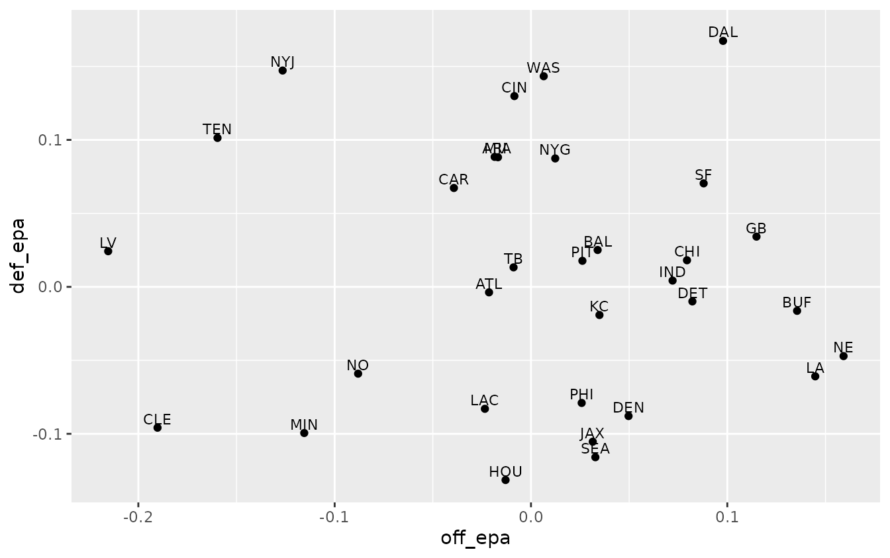
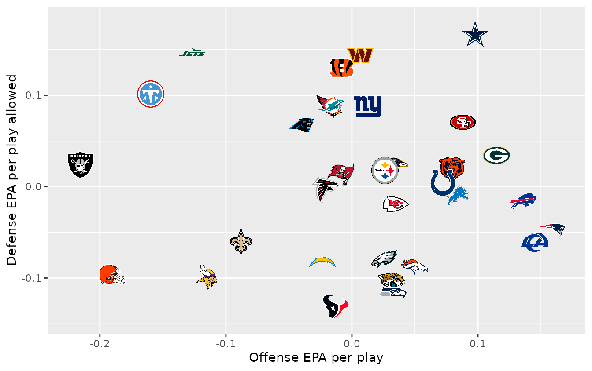
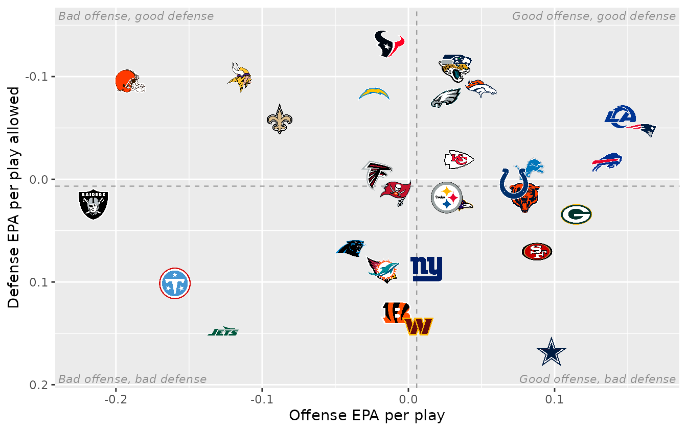
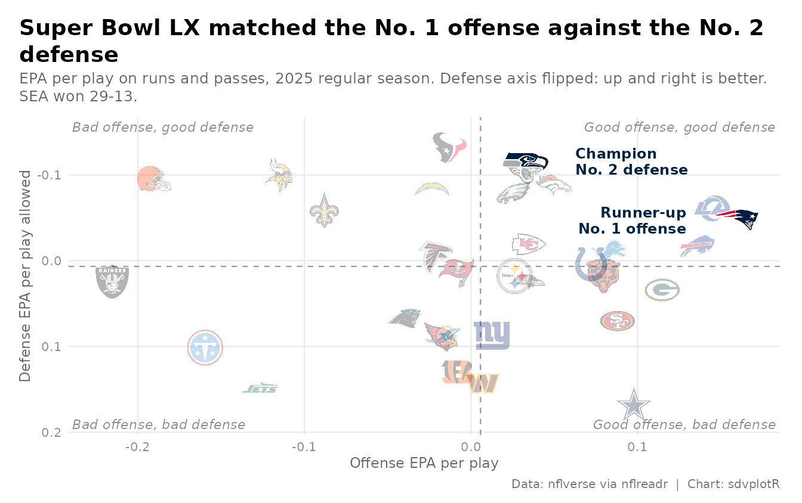
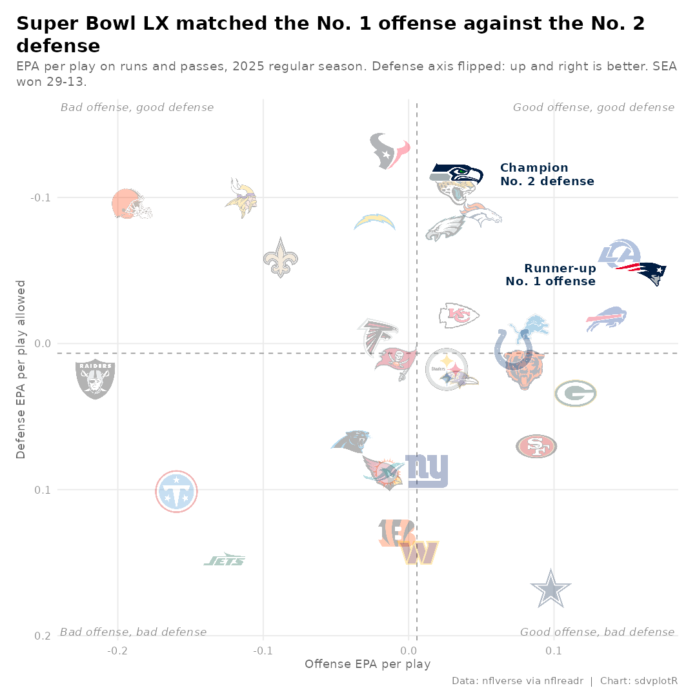

On this page
The brief: the week after the Super Bowl, the social team wants the season’s offense-vs-defense chart for X and Bluesky (1200 x 675) and Instagram (1080 x 1080), and it should say something about the two teams that just played. This is the chart every NFL analyst makes: each team’s offensive EPA per play against the EPA per play its defense allowed, with logos for points. The data is nflverse play-by-play through nflreadr.
library(sdvplotR)
library(ggplot2)
library(dplyr, warn.conflicts = FALSE)
season <- 2025
out_dir <- tempfile("sdvplotR-recipe-") # where the exports go; use your own folder
dir.create(out_dir)1. Get the data
One season of play-by-play, cut to regular-season runs and passes with an EPA value, then averaged twice: by the team with the ball and by the team on defense. The Super Bowl comes from the schedule, so the chart can point at it.
plays <- nflreadr::load_pbp(season) |>
filter(season_type == "REG", play_type %in% c("pass", "run"), !is.na(epa))
offense <- plays |>
group_by(team = posteam) |>
summarise(off_epa = mean(epa), plays = n())
defense <- plays |>
group_by(team = defteam) |>
summarise(def_epa = mean(epa))
stopifnot(is.character(offense$team), is.character(defense$team)) # one type on both sides of the key
teams <- inner_join(offense, defense, by = "team") |>
mutate(
off_rank = min_rank(desc(off_epa)),
def_rank = min_rank(def_epa) # less EPA allowed is better
)
stopifnot(nrow(teams) == 32)
sb <- nflreadr::load_schedules(season) |> filter(game_type == "SB")
winner <- if (sb$home_score > sb$away_score) sb$home_team else sb$away_team
loser <- setdiff(c(sb$home_team, sb$away_team), winner)
sprintf("Super Bowl: %s %d, %s %d", sb$away_team, sb$away_score, sb$home_team, sb$home_score)
#> [1] "Super Bowl: SEA 29, NE 13"
filter(teams, team %in% c(winner, loser))
#> # A tibble: 2 × 6
#> team off_epa plays def_epa off_rank def_rank
#> <chr> <dbl> <int> <dbl> <int> <int>
#> 1 NE 0.159 1017 -0.0471 1 11
#> 2 SEA 0.0328 997 -0.116 13 2The champion had the No. 2 defense and the runner-up the No. 1 offense: that is the story the chart should tell.
2. The first draft
Thirty-two dots and their abbreviations, the five-minute version.
ggplot(teams, aes(off_epa, def_epa)) +
geom_point() +
geom_text(aes(label = team), nudge_y = 0.006, size = 3) +
labs(x = "off_epa", y = "def_epa")
It is all there, but it does not read: labels collide in the middle of the pack, a reader has to work out that low is good on the y axis, and nothing says what the chart is about.
3. Logos for points
geom_sdv_logos() puts each team’s logo on its point, and
the nflverse abbreviations resolve as they are. width is a
share of the panel’s width, so the logos keep their size when the plot
is saved at another size. Logos are drawn inside the panel, so both
scales get a little extra room (expansion()) and no logo at
an edge is cut off.
ggplot(teams, aes(off_epa, def_epa)) +
geom_sdv_logos(aes(team = team), sport = "nfl", width = 0.055) +
scale_x_continuous(expand = expansion(mult = 0.07)) +
scale_y_continuous(expand = expansion(mult = 0.1)) +
labs(x = "Offense EPA per play", y = "Defense EPA per play allowed")
4. Point the axes the same way
Readers expect “up and to the right” to be good.
scale_y_reverse() puts the best defenses on top;
geom_mean_lines() draws dashed league-average lines, and a
label in each corner turns the scatter into four quadrants anyone can
read. Under a reversed scale -Inf is the top edge, so the
corners are placed with Inf and -Inf and the
labels sit just inside them.
corners <- data.frame(
x = c(Inf, -Inf, Inf, -Inf),
y = c(-Inf, -Inf, Inf, Inf), # reversed scale: -Inf is the top
label = c(
"Good offense, good defense", "Bad offense, good defense",
"Good offense, bad defense", "Bad offense, bad defense"
),
hjust = c(1.02, -0.02, 1.02, -0.02),
vjust = c(1.5, 1.5, -0.6, -0.6)
)
quadrants <- list(
geom_mean_lines(aes(x0 = off_epa, y0 = def_epa), color = "grey60", linewidth = 0.4),
geom_text(
aes(x, y, label = label, hjust = hjust, vjust = vjust),
data = corners, inherit.aes = FALSE,
size = 3, color = "grey55", fontface = "italic"
),
scale_x_continuous(expand = expansion(mult = 0.07)),
scale_y_reverse(expand = expansion(mult = 0.12))
)
ggplot(teams, aes(off_epa, def_epa)) +
quadrants +
geom_sdv_logos(aes(team = team), sport = "nfl", width = 0.055) +
labs(x = "Offense EPA per play", y = "Defense EPA per play allowed")
Look for the two finalists. Seattle is half hidden: its numbers are almost the same as Jacksonville’s, and the Jaguars logo covers it. That is one of the two teams the chart is about, and nothing on it points at either of them.
5. Tell the story
Now make it about the Super Bowl. The other 30 logos fade
(alpha), and the two finalists are drawn last and a little
larger, which also lifts Seattle out from under Jacksonville. Each gets
a callout in its team color (scale_color_sdv()), placed
beside the logo rather than on it: the champion’s to the right, the
runner-up’s to the left, a fixed share of the x range away. The title
states the finding instead of describing the axes, the subtitle carries
the definitions and the caption the source.
Titles are the part that breaks when one chart goes out at two sizes.
ggtext’s element_textbox_simple() wraps the title and
subtitle to the width of the canvas, so the same theme works on the wide
post and on the square one. Everything goes in one function of the logo
size, ready for the exports.
finalists <- c(winner, loser)
gap <- 0.08 * diff(range(teams$off_epa)) # clear of a logo, in EPA
callouts <- teams |>
filter(team %in% finalists) |>
mutate(
note = if_else(
team == winner,
paste0("Champion\nNo. ", def_rank, " defense"),
paste0("Runner-up\nNo. ", off_rank, " offense")
),
side = if_else(team == winner, 1, -1),
x = off_epa + side * gap,
hjust = if_else(side > 0, 0, 1)
)
title <- sprintf(
"Super Bowl LX matched the No. %d offense against the No. %d defense",
teams$off_rank[teams$team == loser], teams$def_rank[teams$team == winner]
)
subtitle <- paste0(
"EPA per play on runs and passes, ", season, " regular season. ",
"Defense axis flipped: up and right is better. ", winner, " won ",
max(sb$home_score, sb$away_score), "-", min(sb$home_score, sb$away_score), "."
)
epa_chart <- function(logo_width = 0.055) {
ggplot(teams, aes(off_epa, def_epa)) +
quadrants +
geom_sdv_logos(
aes(team = team),
data = filter(teams, !team %in% finalists),
sport = "nfl", width = logo_width, alpha = 0.3
) +
geom_sdv_logos(
aes(team = team),
data = filter(teams, team %in% finalists),
sport = "nfl", width = logo_width * 1.3
) +
geom_text(
aes(x = x, label = note, color = team, hjust = hjust),
data = callouts, size = 3.2, fontface = "bold", lineheight = 0.9
) +
scale_color_sdv(sport = "nfl") +
labs(
title = title, subtitle = subtitle,
x = "Offense EPA per play", y = "Defense EPA per play allowed",
caption = "Data: nflverse via nflreadr | Chart: sdvplotR"
) +
theme_minimal(base_size = 10) +
theme(
plot.title.position = "plot",
plot.title = ggtext::element_textbox_simple(
face = "bold", size = 14, margin = margin(b = 4)
),
plot.subtitle = ggtext::element_textbox_simple(
color = "grey40", size = 9.5, margin = margin(b = 8)
),
plot.caption = element_text(color = "grey45", size = 7.5),
axis.title = element_text(color = "grey40", size = 9),
axis.text = element_text(color = "grey55"),
panel.grid.minor = element_blank(),
plot.margin = margin(12, 14, 8, 12),
plot.background = element_rect(fill = "white", color = NA)
)
}
epa_chart()
6. Export at social sizes
Social sites resize whatever they get, so export at the size they
show: 1200 x 675 for X and Bluesky, 1080 x 1080 for Instagram.
ggsave() takes the size in inches and a dpi,
and inches times dpi is the pixel count. The square canvas has a
narrower panel than the wide one, and width is a share of
the panel, so the square gets a slightly larger share to keep the logos
the same size on screen.
wide <- file.path(out_dir, "nfl_epa_1200x675.png")
square <- file.path(out_dir, "nfl_epa_1080x1080.png")
ggsave(wide, epa_chart(), width = 8, height = 4.5, dpi = 150)
ggsave(square, epa_chart(logo_width = 0.075), width = 7.2, height = 7.2, dpi = 150)
files <- magick::image_read(c(wide, square))
magick::image_info(files)[c("width", "height")]
#> # A tibble: 2 × 2
#> width height
#> <int> <int>
#> 1 1200 675
#> 2 1080 1080
magick::image_read(wide)
The square cut, from the same function:
magick::image_read(square)